Tool · Windows desktop app (Python)
ZenTabs
A calm list of every tab open in your browsers, with gentle reminders for the ones that linger.
Tabs pile up. One is a thing to read later, one is a task half-done, one is a page you meant to close an hour ago, and they're spread across three windows and two browsers. ZenTabs gathers every tab open in Chrome, Edge, Brave, Opera and Firefox into one quiet list, with how long each has been open, so you can see what's there, jump straight to a tab, or close a handful at once. When a tab has been open a long while, a small note in the corner of the screen asks: still need this tab?
It can also shrink to a slim bar, docked along the top or bottom of the screen like a second taskbar: one drop-down of every tab, and a few small buttons for the one you pick.
It's a companion to Vinyasa, built in the same calm style, and the two can share that strip: tabs on one side, Asana on the other. The point is less clutter and fewer decisions, not one more thing demanding attention.
Free, for Windows 10 and 11. Nothing to install: unzip it and double-click ZenTabs.exe. It keeps itself up to date. ZenTabs only reads tab titles, never your pages, and nothing about you or your tabs is sent anywhere.
Try it
The real app runs on Windows, so here's a preview of it in your browser, with ten sample tabs. Click a tab, then try Keep, Quiet or Close tab; switch to the Waiting view; or click Show a reminder to see (and hear) the note ZenTabs shows for a tab that's been open too long. Then click Try the bar: pick a tab from the drop-down and watch the pretend browser switch to it, and right-click the bar to dock it at the top or make it compact.
Getting started
- Download and unzip. Then move the ZenTabs folder somewhere you'll keep it, like Documents.
- Double-click ZenTabs.exe. Windows may say “Windows protected your PC”, because ZenTabs is a small independent app that isn't registered with Microsoft. Click More info, then Run anyway. You'll only see this once.
- That's it. Your open tabs appear in a moment, the longest-open at the top. There's no account to make and nothing to set up; Settings is there if you'd like to change the reminder time or the look.
What it does
- Every tab, one list: tabs from every window of Chrome, Edge, Brave, Opera and Firefox (and most browsers built on them), with the browser and how long each has been open. Search it, sort it, or switch to Waiting (open past your reminder time) or Quiet (tabs you mean to keep).
- One click to act: double-click a tab to bring its window forward and switch to it. Select several to Close them at once, Keep them (their count starts over), or make them Quiet so ZenTabs never asks about them.
- A gentle question, not an alarm: after a tab has been open a while (15 minutes to a week; two hours to start), one small note at a time asks Still need this tab?, with Close it, Keep it and Go to tab, and a soft singing bowl if you like. Notes wait while you're using ZenTabs itself, and can be paused from the tray.
- Remembers between runs: a tab's time survives a restart, and even a drag to another window, so “open for 3 days” really means three days.
- A second taskbar: the window can shrink to a slim bar, as tall as the taskbar: floating anywhere (“compact”), or docked along the top or bottom of the screen, full width or part of it. Docked, it keeps its strip clear the way the taskbar does, so maximized windows stop at it, and at the bottom it sits just above the taskbar. It steps aside for full-screen videos and games.
- A drop-down of every tab: each with its browser's own icon, its title and how long it's been open, with search. Pick one to switch straight to it. Small buttons beside it close the tab, set a reminder just for it (in 15 minutes, an hour, tomorrow, or never), star it as a favorite, or save a shortcut to the page in your Downloads folder. Right-click the bar for everything else.
- Beside Vinyasa: give the bar part of the width, and Vinyasa's one-line ticker, docked on the same edge, sits in the rest.
- Keeps itself up to date: it checks for a new version when it starts and at noon and midnight. An update shows as ZenTabs 1.1 is ready · Update now, or, with automatic updates on, installs itself and restarts while you're not using it. Your settings carry over.
- Out of the way: close it to the system tray, where a small dot appears on its icon when tabs are waiting. Dawn and Dusk themes, three text sizes, and it can start when you sign in.
- Portable and private: settings live next to the app, so the folder can move to another computer. ZenTabs reads tab titles the way a screen reader does; it never looks inside your pages (starring a tab or saving a shortcut reads that tab's address bar), and its only request to the internet is GitHub's newest version number.
Screenshots

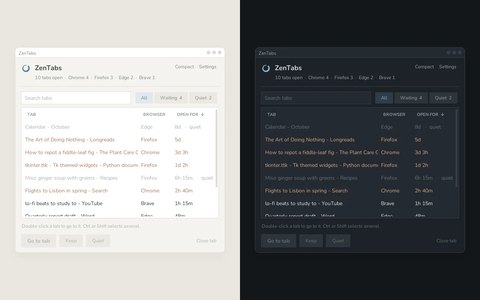

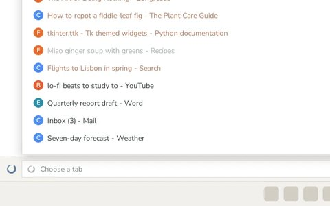

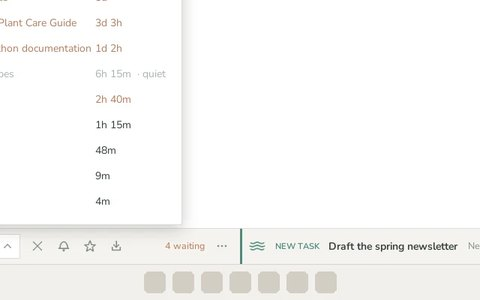

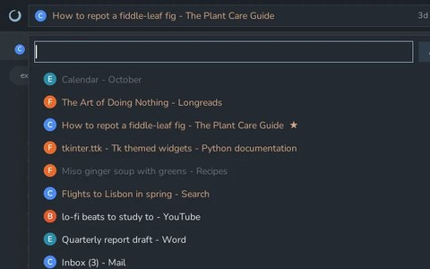

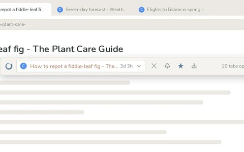

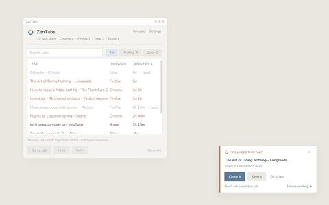

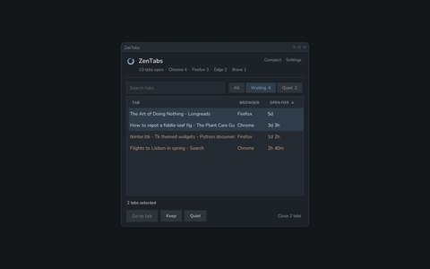

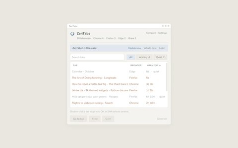

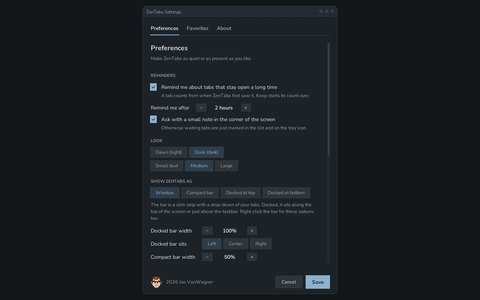

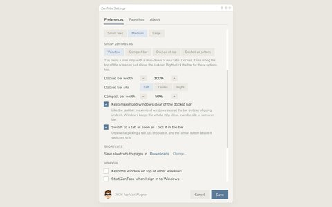

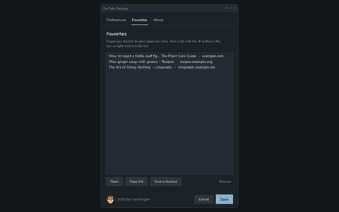

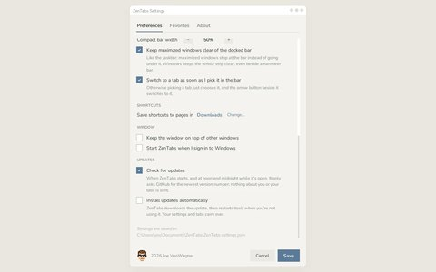

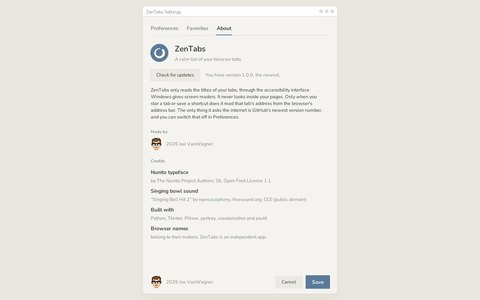
How it's built
ZenTabs is a single Python program with a Tkinter interface. Browsers don't let other programs see their tabs, but they do describe their own windows to screen readers, so ZenTabs uses that same accessibility interface (Windows UI Automation) to find the tab strip in each browser window and read each tab's title, skipping the web pages themselves. A background thread does this every few seconds and hands the window a fresh list through a queue, so the two never trip over each other. Each tab is recognized by a stable ID while it's open, which is how a tab keeps its time when its title changes or it's dragged to another window.
Acting on a tab is done the careful way: Close presses the tab's own close button through the same interface, so nothing needs to be in front and no keystroke can land in the wrong window. The reminders came from asking what a calm interruption looks like: one note at a time, never while you're using ZenTabs itself, and always with a way to say “don't ask again”.
The docked bar is a Windows “app bar”: ZenTabs asks Windows for a strip along the edge of the screen, the same way the taskbar keeps its own, and Windows moves maximized windows out of the way (and puts the strip just above a bottom taskbar). ZenTabs keeps an eye on it, too: if the screen, the taskbar or the strip changes, it docks again, and it gives the strip back when it quits.
Every change is built and tested automatically: GitHub Actions compiles one portable ZenTabs.exe with PyInstaller on Windows, opens a real browser to check that the built app can read its tabs (and their addresses and icons), docks it along the bottom and the top of the screen, and runs the updater end to end. Merging a new version publishes it as a release, and running copies find it on their next check, download it, verify its checksum, and swap themselves for it.
Credits
- Singing bowl sound: “Singing Bell Hit 2” by ryancacophony (Freesound, CC0)
- Typeface: Nunito by The Nunito Project Authors (SIL Open Font License)
- Built with Python, Tkinter, Pillow, pystray, uiautomation and psutil.
- Browser names belong to their makers. ZenTabs is an independent app.